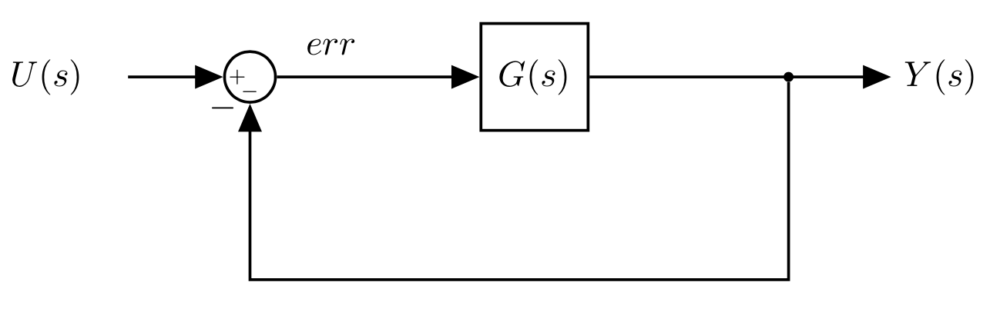

time = np.linspace(0, 10, 20)
y_t = 1 - np.exp(-time)
plt.plot(time, y_t, color='red');Final Value Theorem and Steady State Error
Final Value Theorem and Steady State Error
Before we can talk about control systems there is one more concept that we need to understand
What does it mean to have a final value?

Intuitively, if the output converges to a single value then the final value exists, if instead the output oscillates indefinitely or blows up to infinity then talking abut the final value is meaningless.
How do we calculate the final value?
Time domain
- Final Value = \(\lim_{t\rightarrow\infty} f(t)\)
This means, for example that given a differential equation: - \(\large \ddot{x}(t) + 4\dot{x}(t) + 2x(t) + \delta(0)\) - We can solve it and calculate \(\large \lim\limits_{t\rightarrow\infty} x(t)\).
S-Domain
- We can work directly with the transfer function: \(\large F(s) = \mathcal{L}(f(t))\) (s-domain representation of differential equations)
- Importantly, working in the S-domain simplifies the math: differential equations in the time domain become algebraic equations in the s-domain:
- \(\large s^2X(s)+3sX(s) + 2X(s) = 1\)
- We would like to have a way to calculate the final time value of a function using the s-domain representation of that function
- This is where the Final Value Theorem comes into play.
Final Value Theorem
If and only if the linear time invariant system producing \(x(t)\) is stable then
\(\large \lim\limits_{t \rightarrow \infty} x(t) = \lim\limits_{s \rightarrow 0} sX(s)\)
We can use the Laplace transform directly
Most of the time we already have the Laplace transform
The Final Value Theorem does not work on every single transfer function
We can differentiate four cases in the s-plane: - Right Half Plane (Real > 0) - Imaginary axis (Real = 0) - Left Half Plane (Real < 0) - The Origin
And understand what it means to have a pole in each one of these regions.
Right Half Plane (Real > 0): In this case, the system is unstable: The real component is positive, and \(e^{+st}\) goes to infinity.
- The final value of a system with a pole in the RHP does not exist
For ex. \[G(s) = \frac{1}{s-2}\] FVT: \[\lim\limits_{s \rightarrow 0} \frac{s}{s-2}=0\]
- The FVT produces the wrong value if you use it.
Imaginary axis (Real = 0)
- We know that the system will have oscillatory modes (\(e^{(jwt)}\) produces sin/cos)
- The final value is undefined.
For ex. \[G(s) = \frac{1}{s^2+4}\] FVT: \[\lim\limits_{s \rightarrow 0} \frac{s}{s^2+4}=0\]
- The FVT produces the wrong value if you use it.
Left Half Plane (Real < 0): In this case, the impulse response of the system is stable and eventually will go to zero.
For ex. \[G(s) = \frac{1}{s+2}\] FVT: \[\lim\limits_{s \rightarrow 0} \frac{s}{s+2}=0\]
- The FVT produces the correct value. Note that the value will be zero for every transfer function with poles only in the left half plane.
The Origin: In this case we are looking at a system like the integrator and the impulse response of an integrator is the integral of the impulse, which is 1.
For ex. \[G(s) = \frac{1}{s}\] FVT: \[\lim\limits_{s \rightarrow 0} \frac{s}{s}=1\]
- The FVT produces the correct value.
The number of poles at the origin is called System Type
- Type 0:
- no poles at the origin
- FV = 0 (if all poles are in the LHP)
- Type 1:
- one pole at the origin
- the final value is a real number (if all the other poles are in the LHP)
- Type 2:
- two poles at the origin
- the final value is \(\large \inf\) (the integral of a step is a ramp)
- Type 3 and above:
- three or more poles at the origin
- the final value is \(\large \inf\) (we are now integrating a ramp, etc.)

Recap
- We can use the Final Value Theorem if all poles are in the Left Half Plane or at the origin (aymptotically stable system).
- If there is even a single pole with \(\Re > 0\), or a pair of complex conjugated poles (on the imaginary axis) then we cannot use the FVT.
Examples
Let’s consider:
\(\large G(s)=\frac{1}{s^2+s}\)
\(\large u(t) = \delta(t) \rightarrow U(s)=1\)
This is type 1 system:
- $G(s)= = $

We can apply the Final Value Theorem:
\[ G(0) = \lim\limits_{s \rightarrow 0} s \frac{1}{s}\frac{1}{s+1} = 1\]
And in fact if we plot the impulse response: - \(\large y(t) = 1-e^{-t}\)
And if we plot it:
Let’s now consider the same system, but with a different input: - \(\large u(t) = 1(t)\) - a step input - \(\large U(s) = \frac{1}{s}\)
When we do this, we are adding another pole at the origin:
- This is now a type 2 system
- We can apply the Final Value Theorem:
\[ G(0) = \lim\limits_{s \rightarrow 0} s \frac{1}{s}\frac{1}{s^2+s} = \inf\]
Steady state error
Let’s know see what happens when we apply these concepts to a feedback system:
- We could apply the Final Value Theorem to find the final value of \(Y(s)\)
- Note that we need to reduce the system into a single transfer function first.
- However, if the system is correctly designed we want \(Y(s) \rightarrow U(s)\), so the output follows the input as closely as possible
- e.g. We input a ramp, we would expect a ramp at the output.
- In this case the final value theorem would give us \(\large \infty\), but regardless what information have we gained?
- Instead, we design feedback control systems to drive the error between the reference input and the output to zero.
- The final value of the error is a much better indicator of the performance of our controller.
- This is called the Steady State Error and we can use the FVT to obtain it.
First, we need to write the transfer function from the input \(U(s)\) to the error \(Err(s)\). - To emphasise what we are doing, let’s re-write the block diagram:

We know how to write the transfer function for this already: \[E(s)=U(s)-Y(s)\] \[Y(s)=G(s)E(s)\]
\[\Rightarrow E(s)=U(s)-G(s)E(s) \rightarrow E(s)+G(s)E(s) = U(s) \] \[ E(s)= \frac{U(s)}{1+G(s)}\]
Steady state error
\[E_{ss} = \lim \limits_{s\rightarrow0} s\frac{U(s)}{1+G(s)}\]
We can now figure out what the steady state error is replacing \(U(s)\) with the appropriate input we want to study the response of (e.g. 1 (impulse) \(\frac{1}{s}\) (step), \(\frac{1}{s^2}\) (ramp)).
The same observations we did before apply: - Depending on the input we are adding poles at the origin, and hence increasing the type of the system. - This means that the system might not be able to follow you inputs perfectly. - This depends on the design specifications and we might need to change the controller - More on this later, for now you might need to modify the system adding a zero at the origin.